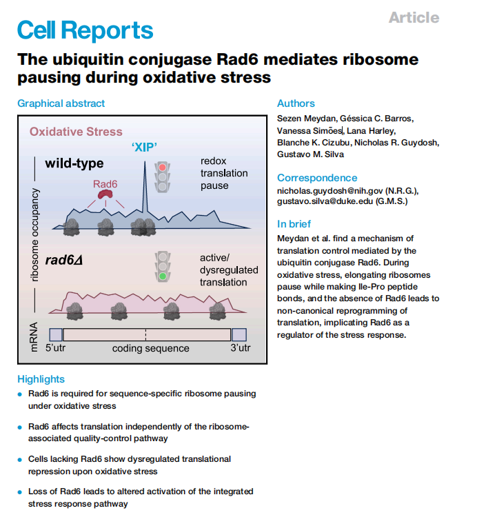
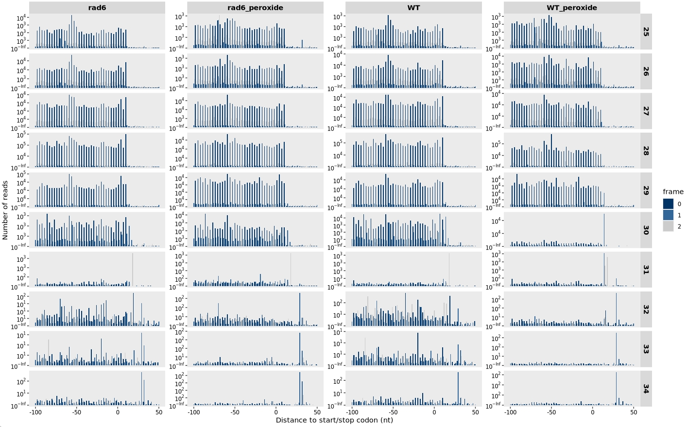

#!/usr/bin/env bash
ascp -QT -l 300m -P33001 -i $HOME/.aspera/connect/etc/asperaweb_id_dsa.openssh era-fasp@fasp.sra.ebi.ac.uk:vol1/fastq/SRR236/023/SRR23617123/SRR23617123.fastq.gz . && mv SRR23617123.fastq.gz SUB280_WT_rep1_F.fastq.gz
ascp -QT -l 300m -P33001 -i $HOME/.aspera/connect/etc/asperaweb_id_dsa.openssh era-fasp@fasp.sra.ebi.ac.uk:vol1/fastq/SRR236/021/SRR23617121/SRR23617121.fastq.gz . && mv SRR23617121.fastq.gz SUB280_WT_peroxide_rep1_F.fastq.gz
ascp -QT -l 300m -P33001 -i $HOME/.aspera/connect/etc/asperaweb_id_dsa.openssh era-fasp@fasp.sra.ebi.ac.uk:vol1/fastq/SRR236/020/SRR23617120/SRR23617120.fastq.gz . && mv SRR23617120.fastq.gz SUB280_WT_peroxide_rep2_F.fastq.gz
ascp -QT -l 300m -P33001 -i $HOME/.aspera/connect/etc/asperaweb_id_dsa.openssh era-fasp@fasp.sra.ebi.ac.uk:vol1/fastq/SRR236/022/SRR23617122/SRR23617122.fastq.gz . && mv SRR23617122.fastq.gz SUB280_WT_rep2_F.fastq.gz
ascp -QT -l 300m -P33001 -i $HOME/.aspera/connect/etc/asperaweb_id_dsa.openssh era-fasp@fasp.sra.ebi.ac.uk:vol1/fastq/SRR236/018/SRR23617118/SRR23617118.fastq.gz . && mv SRR23617118.fastq.gz SUB280_rad6_rep2_F.fastq.gz
ascp -QT -l 300m -P33001 -i $HOME/.aspera/connect/etc/asperaweb_id_dsa.openssh era-fasp@fasp.sra.ebi.ac.uk:vol1/fastq/SRR236/019/SRR23617119/SRR23617119.fastq.gz . && mv SRR23617119.fastq.gz SUB280_rad6_rep1_F.fastq.gz
ascp -QT -l 300m -P33001 -i $HOME/.aspera/connect/etc/asperaweb_id_dsa.openssh era-fasp@fasp.sra.ebi.ac.uk:vol1/fastq/SRR236/017/SRR23617117/SRR23617117.fastq.gz . && mv SRR23617117.fastq.gz SUB280_rad6_peroxide_rep1_F.fastq.gz
ascp -QT -l 300m -P33001 -i $HOME/.aspera/connect/etc/asperaweb_id_dsa.openssh era-fasp@fasp.sra.ebi.ac.uk:vol1/fastq/SRR236/014/SRR23617114/SRR23617114.fastq.gz . && mv SRR23617114.fastq.gz SUB280_hel2_peroxide_F.fastq.gz
ascp -QT -l 300m -P33001 -i $HOME/.aspera/connect/etc/asperaweb_id_dsa.openssh era-fasp@fasp.sra.ebi.ac.uk:vol1/fastq/SRR236/016/SRR23617116/SRR23617116.fastq.gz . && mv SRR23617116.fastq.gz SUB280_rad6_peroxide_rep2_F.fastq.gz
ascp -QT -l 300m -P33001 -i $HOME/.aspera/connect/etc/asperaweb_id_dsa.openssh era-fasp@fasp.sra.ebi.ac.uk:vol1/fastq/SRR236/015/SRR23617115/SRR23617115.fastq.gz . && mv SRR23617115.fastq.gz SUB280_hel2_F.fastq.gz
ascp -QT -l 300m -P33001 -i $HOME/.aspera/connect/etc/asperaweb_id_dsa.openssh era-fasp@fasp.sra.ebi.ac.uk:vol1/fastq/SRR236/011/SRR23617111/SRR23617111.fastq.gz . && mv SRR23617111.fastq.gz SUB280_rad6_RAD6_C88A_F.fastq.gz
ascp -QT -l 300m -P33001 -i $HOME/.aspera/connect/etc/asperaweb_id_dsa.openssh era-fasp@fasp.sra.ebi.ac.uk:vol1/fastq/SRR236/013/SRR23617113/SRR23617113.fastq.gz . && mv SRR23617113.fastq.gz SUB280_rad6_RAD6_F.fastq.gz
ascp -QT -l 300m -P33001 -i $HOME/.aspera/connect/etc/asperaweb_id_dsa.openssh era-fasp@fasp.sra.ebi.ac.uk:vol1/fastq/SRR236/012/SRR23617112/SRR23617112.fastq.gz . && mv SRR23617112.fastq.gz SUB280_rad6_RAD6_peroxide_F.fastq.gz
ascp -QT -l 300m -P33001 -i $HOME/.aspera/connect/etc/asperaweb_id_dsa.openssh era-fasp@fasp.sra.ebi.ac.uk:vol1/fastq/SRR236/008/SRR23617108/SRR23617108.fastq.gz . && mv SRR23617108.fastq.gz S288C_WT_peroxide_F.fastq.gz
ascp -QT -l 300m -P33001 -i $HOME/.aspera/connect/etc/asperaweb_id_dsa.openssh era-fasp@fasp.sra.ebi.ac.uk:vol1/fastq/SRR236/010/SRR23617110/SRR23617110.fastq.gz . && mv SRR23617110.fastq.gz SUB280_rad6_RAD6_C88A_peroxide_F.fastq.gz
ascp -QT -l 300m -P33001 -i $HOME/.aspera/connect/etc/asperaweb_id_dsa.openssh era-fasp@fasp.sra.ebi.ac.uk:vol1/fastq/SRR236/009/SRR23617109/SRR23617109.fastq.gz . && mv SRR23617109.fastq.gz S288C_WT_F.fastq.gz
ascp -QT -l 300m -P33001 -i $HOME/.aspera/connect/etc/asperaweb_id_dsa.openssh era-fasp@fasp.sra.ebi.ac.uk:vol1/fastq/SRR236/007/SRR23617107/SRR23617107.fastq.gz . && mv SRR23617107.fastq.gz S288C_rad6_F.fastq.gz
ascp -QT -l 300m -P33001 -i $HOME/.aspera/connect/etc/asperaweb_id_dsa.openssh era-fasp@fasp.sra.ebi.ac.uk:vol1/fastq/SRR236/005/SRR23617105/SRR23617105.fastq.gz . && mv SRR23617105.fastq.gz SUB280_WT_rep1_Fd.fastq.gz
ascp -QT -l 300m -P33001 -i $HOME/.aspera/connect/etc/asperaweb_id_dsa.openssh era-fasp@fasp.sra.ebi.ac.uk:vol1/fastq/SRR236/003/SRR23617103/SRR23617103.fastq.gz . && mv SRR23617103.fastq.gz SUB280_WT_peroxide_rep1_Fd.fastq.gz
ascp -QT -l 300m -P33001 -i $HOME/.aspera/connect/etc/asperaweb_id_dsa.openssh era-fasp@fasp.sra.ebi.ac.uk:vol1/fastq/SRR236/006/SRR23617106/SRR23617106.fastq.gz . && mv SRR23617106.fastq.gz S288C_rad6_peroxide_F.fastq.gz
ascp -QT -l 300m -P33001 -i $HOME/.aspera/connect/etc/asperaweb_id_dsa.openssh era-fasp@fasp.sra.ebi.ac.uk:vol1/fastq/SRR236/002/SRR23617102/SRR23617102.fastq.gz . && mv SRR23617102.fastq.gz SUB280_WT_peroxide_rep2_Fd.fastq.gz
ascp -QT -l 300m -P33001 -i $HOME/.aspera/connect/etc/asperaweb_id_dsa.openssh era-fasp@fasp.sra.ebi.ac.uk:vol1/fastq/SRR236/004/SRR23617104/SRR23617104.fastq.gz . && mv SRR23617104.fastq.gz SUB280_WT_rep2_Fd.fastq.gz
ascp -QT -l 300m -P33001 -i $HOME/.aspera/connect/etc/asperaweb_id_dsa.openssh era-fasp@fasp.sra.ebi.ac.uk:vol1/fastq/SRR236/001/SRR23617101/SRR23617101.fastq.gz . && mv SRR23617101.fastq.gz SUB280_rad6_Fd.fastq.gz
ascp -QT -l 300m -P33001 -i $HOME/.aspera/connect/etc/asperaweb_id_dsa.openssh era-fasp@fasp.sra.ebi.ac.uk:vol1/fastq/SRR236/000/SRR23617100/SRR23617100.fastq.gz . && mv SRR23617100.fastq.gz SUB280_rad6_peroxide_Fd.fastq.gz13 Ubiquitin conjugase Rad6
13.1 Intro
In this section, we demonstrate how to use riboTransVis to reproduce the key findings from the Cell Reports article titled “The ubiquitin conjugase Rad6 mediates ribosome pausing during oxidative stress” by Meydan et al. (2023).

This study uncovers a novel mechanism of translation regulation in Saccharomyces cerevisiae mediated by the ubiquitin-conjugating enzyme Rad6 under conditions of oxidative stress. Using Ribo-seq and Disome-seq approaches, the researchers show that Rad6 is essential for promoting ribosome pausing—particularly at isoleucine-proline (XIP) motifs—upon treatment with hydrogen peroxide (H₂O₂). These pause sites are thought to trigger ribosome collisions and contribute to translation repression.
Importantly, Rad6 modifies ribosomes via K63-linked polyubiquitin chains, a process independent of the ribosome-associated quality control (RQC) pathway. In rad6Δ cells, redox-induced pausing signatures are lost, global translation is less inhibited, and there is abnormal activation of antioxidant response genes. The study also reveals that Rad6 contributes to activation of the integrated stress response (ISR) via eIF2α phosphorylation and modulates the translation of the transcription factor GCN4.
These findings highlight an alternative translation control pathway—termed redox control of translation by ubiquitin (RTU)—where Rad6-mediated ubiquitination regulates translation elongation during oxidative stress, thereby shaping the cellular stress response.
13.2 Data Download
The GEO accession number for the dataset associated with the study is GSE226082. To access the sequencing data, you can search for this number in the GEO (Gene Expression Omnibus) database. Additionally, the corresponding SRA (Sequence Read Archive) project number is PRJNA938481. Using this SRA ID, you can retrieve the FASTQ raw sequencing data from the SRA Explorer platform.
To speed up the download, we recommend using the Aspera high-speed file transfer protocol. On the SRA Explorer website, you can locate the Aspera download links for the FASTQ data files corresponding to each sample in the study:
13.3 Adapter Trimming
After running FastQC on the raw FASTQ files, we observed the presence of adapter contamination in the sequencing reads. According to the Methods section of the original publication, adapter trimming was performed using Cutadapt.
We applied Cutadapt to remove unwanted bases from both ends of the reads. In particular, we trimmed 2 nucleotides from the 5′ end (using -u 2) and 5 nucleotides from the 3′ end (using -u -5).
Here is the bash script we used to batch-process multiple FASTQ files:
# Adapter trimming with Cutadapt for all samples
for i in SUB280_WT_rep1_F SUB280_WT_rep2_F SUB280_WT_peroxide_rep1_F SUB280_WT_peroxide_rep2_F SUB280_rad6_rep1_F SUB280_rad6_rep2_F SUB280_rad6_peroxide_rep1_F SUB280_rad6_peroxide_rep2_F SUB280_hel2_F SUB280_hel2_peroxide_F SUB280_rad6_RAD6_F SUB280_rad6_RAD6_peroxide_F SUB280_rad6_RAD6_C88A_F SUB280_rad6_RAD6_C88A_peroxide_F S288C_WT_F S288C_WT_peroxide_F S288C_rad6_F S288C_rad6_peroxide_F SUB280_WT_rep1_Fd SUB280_WT_rep2_Fd SUB280_WT_peroxide_rep1_Fd SUB280_WT_peroxide_rep2_Fd SUB280_rad6_Fd SUB280_rad6_peroxide_Fd
do
cutadapt -j 20 -u 2 -u -5 -o ./${i}_trim.fq.gz ../1.raw-data/${i}.fastq.gz
done13.4 Removal of rRNA Contamination
After adapter trimming, the cleaned sequencing reads still contain a proportion of ribosomal RNA (rRNA) contaminants, which can interfere with downstream translational profiling. To eliminate these reads, we aligned the trimmed reads against a reference index of Saccharomyces cerevisiae rRNA sequences using Bowtie2.
Following the original study’s pipeline, reads that did not map to rRNA were retained for downstream analyses. The alignment was performed with the following shell script:
# Remove reads that map to rRNA
for i in SUB280_WT_rep1_F SUB280_WT_rep2_F SUB280_WT_peroxide_rep1_F SUB280_WT_peroxide_rep2_F SUB280_rad6_rep1_F SUB280_rad6_rep2_F SUB280_rad6_peroxide_rep1_F SUB280_rad6_peroxide_rep2_F SUB280_hel2_F SUB280_hel2_peroxide_F SUB280_rad6_RAD6_F SUB280_rad6_RAD6_peroxide_F SUB280_rad6_RAD6_C88A_F SUB280_rad6_RAD6_C88A_peroxide_F S288C_WT_F S288C_WT_peroxide_F S288C_rad6_F S288C_rad6_peroxide_F SUB280_WT_rep1_Fd SUB280_WT_rep2_Fd SUB280_WT_peroxide_rep1_Fd SUB280_WT_peroxide_rep2_Fd SUB280_rad6_Fd SUB280_rad6_peroxide_Fd
do
bowtie2 -p 20 -x ../../index-data/sac-rRNA-index/Saccharomyces-cerevisiae-rRNA \
--un-gz ${i}.rmrRNA.fq.gz \
-U ../2.trim-data/${i}_trim.fq.gz \
-S ./null
done13.5 Genome Alignment
After removing rRNA contaminants, the remaining clean reads were aligned to the reference genome of Saccharomyces cerevisiae using the STAR aligner, which is well-suited for spliced alignment of both RNA-seq and ribosome profiling reads. Prior to read alignment, a STAR genome index must be generated.
13.5.1 Step 1: Build STAR Genome Index
Before mapping reads to the genome, we need to generate an indexed genome with a corresponding annotation file (GTF). Below is the command used to build the STAR index:
STAR --runThreadN 15 \
--runMode genomeGenerate \
--genomeDir sac-star-genome-index/ \
--genomeFastaFiles ./Saccharomyces_cerevisiae.R64-1-1.dna.toplevel.fa \
--sjdbGTFfile Saccharomyces_cerevisiae.R64-1-1.112.gtf13.5.1.1 Explanation of parameters:
--runThreadN 15: Use 15 CPU threads to speed up indexing.--runMode genomeGenerate: Instructs STAR to generate the genome index.--genomeDir: Output directory for the STAR index files.--genomeFastaFiles: Path to the FASTA file of the yeast genome (S. cerevisiae R64-1-1 build).--sjdbGTFfile: Path to the GTF annotation file for splice junctions.
Once built, this index can be reused for alignment across all samples.
13.5.2 Step 2: Align Reads to the Genome
With the index in place, we mapped the rRNA-depleted FASTQ files to the genome using the following shell script:
# Align reads to the yeast genome using STAR
for i in SUB280_WT_rep1_F SUB280_WT_rep2_F SUB280_WT_peroxide_rep1_F SUB280_WT_peroxide_rep2_F \
SUB280_rad6_rep1_F SUB280_rad6_rep2_F SUB280_rad6_peroxide_rep1_F SUB280_rad6_peroxide_rep2_F \
SUB280_hel2_F SUB280_hel2_peroxide_F SUB280_rad6_RAD6_F SUB280_rad6_RAD6_peroxide_F \
SUB280_rad6_RAD6_C88A_F SUB280_rad6_RAD6_C88A_peroxide_F S288C_WT_F S288C_WT_peroxide_F \
S288C_rad6_F S288C_rad6_peroxide_F \
SUB280_WT_rep1_Fd SUB280_WT_rep2_Fd SUB280_WT_peroxide_rep1_Fd SUB280_WT_peroxide_rep2_Fd \
SUB280_rad6_Fd SUB280_rad6_peroxide_Fd
do
STAR --runThreadN 20 \
--outFilterType Normal \
--alignEndsType EndToEnd \
--outFilterMismatchNmax 1 \
--outFilterMultimapNmax 1 \
--genomeDir ../../index-data/sac-star-genome-index \
--readFilesCommand gunzip -c \
--readFilesIn ../3.rmrRNA-data/${i}.rmrRNA.fq.gz \
--outFileNamePrefix ./${i} \
--outSAMtype BAM SortedByCoordinate \
--quantMode GeneCounts \
--outSAMattributes All
done13.6 Constructing a ribotrans Object
After obtaining the aligned BAM files, we proceeded to downstream analysis using the riboTransVis package. The first step involves creating a ribotrans object by selecting a subset of ribosome profiling (Ribo-seq) samples representative of different genetic backgrounds and experimental conditions. Once constructed, we performed a quality control (QC) analysis by extracting read information from all alignments.
In accordance with the original publication, ribosome footprints were assigned using the 3′ end of reads (assignment_mode = "end3"):
library(riboTransVis)
# sample names
sp <- c("WT_rep1","WT_rep2",
"WT_peroxide_rep1","WT_peroxide_rep2",
"rad6_rep1","rad6_rep2",
"rad6_peroxide_rep1","rad6_peroxide_rep2")
# group names
gp <- c("WT","WT","WT_peroxide","WT_peroxide",
"rad6","rad6","rad6_peroxide","rad6_peroxide")
# bams
ribobams <- c("SUB280_WT_rep1_FAligned.sortedByCoord.out.bam",
"SUB280_WT_rep2_FAligned.sortedByCoord.out.bam",
"SUB280_WT_peroxide_rep1_FAligned.sortedByCoord.out.bam",
"SUB280_WT_peroxide_rep2_FAligned.sortedByCoord.out.bam",
"SUB280_rad6_rep1_FAligned.sortedByCoord.out.bam",
"SUB280_rad6_rep2_FAligned.sortedByCoord.out.bam",
"SUB280_rad6_peroxide_rep1_FAligned.sortedByCoord.out.bam",
"SUB280_rad6_peroxide_rep2_FAligned.sortedByCoord.out.bam")
# construct_ribotrans
obj <- construct_ribotrans(genome_file = "../../index-data/Saccharomyces_cerevisiae.R64-1-1.dna.toplevel.fa",
gtf_file = "../../index-data/Saccharomyces_cerevisiae.R64-1-1.112.gtf",
mapping_type = "genome",
assignment_mode = "end3",
extend = TRUE,
extend_upstream = 50,
extend_downstream = 50,
Ribo_bam_file = ribobams,
Ribo_sample_name = sp,
Ribo_sample_group = gp,
choose_longest_trans = T)
# generate summary data for QC or other analysis
obj <- generate_summary(object = obj, exp_type = "ribo", nThreads = 40)13.7 Ribo-seq Quality Control
13.7.1 Length distribution
Plotting the RPF Fragment Length Distribution:
# qc
library(ggplot2)
length_plot(obj) +
scale_x_continuous(labels = scales::label_number(accuracy = 1)) +
facet_wrap(~sample, nrow = 2,scales = "free")Setting the option merge_rep = TRUE can be used to combine biological replicates for each condition:
length_plot(obj,merge_rep = T) +
scale_x_continuous(labels = scales::label_number(accuracy = 1)) +
facet_wrap(~sample, nrow = 1,scales = "free")Adding frame infomation:
length_plot(obj,type = "frame_length") +
facet_wrap(~sample, nrow = 2,scales = "free") +
scale_fill_grey()13.7.2 Frame proportion
we can visualize the overall proportion of reads aligning to frame 0, 1, and 2 using the frame_plot() function:
frame_plot(obj) +
facet_wrap(~sample, nrow = 2,scales = "free")13.7.3 Feature distribution
To analyze the distribution of ribosome-protected fragments (RPFs) across different transcript features—including the 5′ untranslated region (5′ UTR), coding sequence (CDS), and 3′ untranslated region (3′ UTR)—you can use the feature_plot() function provided by the riboTransVis package as shown below:
feature_plot(obj) +
facet_wrap(~sample, nrow = 2,scales = "free")13.7.4 Distribution around start and stop codons
Distribution relative to the start codon:
relative_dist_plot(obj, merge_rep = T)Distribution relative to the stop codon:
relative_dist_plot(obj,
type = "rel2stop",
merge_rep = T)
13.7.5 Offset check
Ribo-seq reads were aligned by their 3′ ends. For Ribo-seq data, the reads were shifted 15 nt from their 3′ end to align the P-site to the beginning of each gene:
relative_offset_plot(obj)13.7.6 Save ribotrans object
Use the save function to store our riboTrans object for future analysis. This saves the riboTrans object into an .rda file named “obj.rda”, so it can be loaded and reused in future R sessions without reprocessing.
save(obj,file = "obj.rda")13.8 Offset correction
According to the Methods section of the publication, only fragments with lengths between 25–34 nucleotides were retained for analysis. The authors applied a shift of 18 nucleotides from the 3′ end of each fragment to position the E-site correctly. Based on this approach, we shift the 3′ end of the reads by 18 nucleotides for alignment:
library(riboTransVis)
library(patchwork)
# Load the saved riboTrans object
load("obj.rda")
# Define the offset table for each sample and read length
offset <- rbind(
data.frame(list(sample = "WT_rep1",
qwidth = 25:34,
rel_pos = -13)),
data.frame(list(sample = "WT_rep2",
qwidth = 25:34,
rel_pos = -13)),
data.frame(list(sample = "WT_peroxide_rep1",
qwidth = 25:34,
rel_pos = 18)),
data.frame(list(sample = "WT_peroxide_rep2",
qwidth = 25:34,
rel_pos = 18)),
data.frame(list(sample = "rad6_rep1",
qwidth = 25:34,
rel_pos = 18)),
data.frame(list(sample = "rad6_rep2",
qwidth = 25:34,
rel_pos = 18)),
data.frame(list(sample = "rad6_peroxide_rep1",
qwidth = 25:34,
rel_pos = 18)),
data.frame(list(sample = "rad6_peroxide_rep2",
qwidth = 25:34,
rel_pos = 18))
)
# Assign the offset to the riboTrans object
obj@reads_offset_info <- offset13.9 Tri-peptide analysis
In the study, a tri-peptide (three-amino-acid motif) analysis was conducted based on the Ribo-seq data. It was observed that oxidative stress induces strong ribosome stalling at XIP motifs. However, this stalling effect disappears in RAD6 knockout cells, even under oxidative stress conditions.
13.9.1 Extract CDS sequence
As a first step, we extract the coding sequences (CDS) of protein-coding genes for further tri-peptide analysis:
get_transcript_sequence(genome_file = "../../index-data/Saccharomyces_cerevisiae.R64-1-1.dna.toplevel.fa",
gtf_file = "../../index-data/Saccharomyces_cerevisiae.R64-1-1.112.gtf",
feature = "CDS",
output_file = "sac_cds.fa")🧬 Note: XIP represents a motif where “X” can be any amino acid, followed by isoleucine (I) at the P-site and proline (P) at the A-site of the ribosome — a major redox-responsive stalling signal identified in the paper.
13.9.2 Tri-peptide pause score calculation
To investigate motif-specific translational pausing, we calculate the pause scores of tri-peptide sequences under different conditions and visualize the results:
peptide_df <- multi_peptide_occupancy(
object = obj,
cds_fa = "./sac_cds.fa",
do_offset_correct = TRUE,
peptide_length = 3,
peptide_occurrence = 100
)
# Access the pause scores in wide format (peptides × samples)
pdf <- peptide_df$wider_format
# View column names
colnames(pdf)
# [1] "pep_seq" "WT_peroxide_rep1" "WT_peroxide_rep2" "WT_rep1" "WT_rep2"
# [6] "rad6_peroxide_rep1" "rad6_peroxide_rep2" "rad6_rep1" "rad6_rep2"We next compare the tri-peptide pause scores between oxidized vs control samples using scatter plots:
# Plot pause score changes in WT samples
wt1 <- peptide_scatter_plot(data = pdf, x = "WT_rep1", y = "WT_peroxide_rep1")
wt2 <- peptide_scatter_plot(data = pdf, x = "WT_rep2", y = "WT_peroxide_rep2")
# Plot pause score changes in Rad6-deletion samples
rad61 <- peptide_scatter_plot(data = pdf, x = "rad6_rep1", y = "rad6_peroxide_rep1")
rad62 <- peptide_scatter_plot(data = pdf, x = "rad6_rep2", y = "rad6_peroxide_rep2")
# Combine plots for side-by-side comparison
(wt1 + wt2) / (rad61 + rad62)13.9.2.1 Custom plot
We can customize our tri-peptide pause score plots using ggplot2 syntax for enhanced visualization and highlighting of specific motifs. Here’s an example:
# Load required package
library(ggplot2)
# define plot function
peptide_scatter_plot2 <- function(data = NULL,
x = NULL,y = NULL,
color = "#003366",
label_size = 3,
hjust = 1.2,vjust = 1.2,
motif = NULL){
# get ratio
label_df <- data[,c("pep_seq",x,y)]
label_df <- subset(label_df, pep_seq %in% motif)
if (requireNamespace("grDevices", quietly = TRUE)) {
xlims <- grDevices::extendrange(data[,2:ncol(data)],f = 0.1)[2]
} else {
warning("Package 'grDevices' is needed for this function to work.")
}
# plot
ggplot(data) +
geom_point(aes(x = get(x),y = get(y)),fill = color,shape = 21,color = "grey50") +
geom_text(data = label_df,
aes(x = get(x), y = get(y), label = pep_seq),
hjust = hjust, vjust = vjust, size = label_size, check_overlap = TRUE) +
geom_abline(slope = 1,intercept = 0,lty = "dashed", color = "grey40") +
theme_bw() +
theme(panel.grid = element_blank(),
axis.text = element_text(colour = "black")) +
coord_equal() +
xlab(x) + ylab(y) +
xlim(0, xlims) +
ylim(0, xlims)
}
# Define motifs of interest
motif <- c("KIP", "MIP", "QIP", "KIH", "EIH", "RKK", "PPD", "PPE")
# Generate scatter plots highlighting specific motifs in each comparison
wt1 <- peptide_scatter_plot2(
data = pdf,
x = "WT_rep1",
y = "WT_peroxide_rep1",
motif = motif,
color = "#1DCD9F" # turquoise color for WT
)
wt2 <- peptide_scatter_plot2(
data = pdf,
x = "WT_rep2",
y = "WT_peroxide_rep2",
motif = motif,
color = "#1DCD9F"
)
rad61 <- peptide_scatter_plot2(
data = pdf,
x = "rad6_rep1",
y = "rad6_peroxide_rep1",
motif = motif,
color = "#FEBA17" # amber color for rad6Δ
)
rad62 <- peptide_scatter_plot2(
data = pdf,
x = "rad6_rep2",
y = "rad6_peroxide_rep2",
motif = motif,
color = "#FEBA17"
)
# Arrange plots using patchwork
(wt1 + wt2) / (rad61 + rad62)13.9.2.2 Combine biological replicates
To reduce variability and improve statistical power, we merge multiple biological replicates using the parameter merge_rep = TRUE in the multi_peptide_occupancy function:
# Merge replicates
peptide_df2 <- multi_peptide_occupancy(
object = obj,
cds_fa = "./sac_cds.fa",
do_offset_correct = TRUE,
peptide_length = 3,
merge_rep = TRUE
)
# Retrieve data in wide format
pdf2 <- peptide_df2$wider_format
# Check column names
colnames(pdf2)
# [1] "pep_seq" "WT" "WT_peroxide" "rad6" "rad6_peroxide"We then visualize motif-specific pause score changes between conditions using customized scatter plots:
# Generate scatter plot comparing WT with and without oxidative stress
wt <- peptide_scatter_plot2(
data = pdf2,
x = "WT",
y = "WT_peroxide",
motif = motif,
color = "#1DCD9F"
)
# Generate scatter plot comparing rad6Δ with and without oxidative stress
rad6 <- peptide_scatter_plot2(
data = pdf2,
x = "rad6",
y = "rad6_peroxide",
motif = motif,
color = "#FEBA17"
)
# Combine plots for side-by-side comparison
wt + rad613.10 Gene ribosome occupancy
This study demonstrated that the SKI2 and PCF11 genes exhibit pronounced ribosome pausing following oxidative stress, specifically at the LIP and KIP tri-peptide motifs. Interestingly, this stress-induced stalling is lost in RAD6-deficient (rad6Δ) cells.
To visualize ribosome occupancy for these two genes, we can generate ribosome profiling (Ribo-seq) track plots that include biological replicates.
13.10.1 With biological replicates
The following code generates ribosome occupancy tracks for SKI2 and PCF11, retaining biological replicate information:
# Generate gene track plots with biological replicates
plist <- lapply(c("SKI2", "PCF11"), function(x) {
obj <- get_occupancy(
object = obj,
gene_name = x,
coordinate_to_trans = TRUE,
do_reads_offset = TRUE,
merge_rep = FALSE # Retain individual replicates
)
# Create ribosome occupancy plot
p <- trans_plot(object = obj, type = "ribo")
return(p)
})
# Combine plots side by side
cowplot::plot_grid(plotlist = plist, nrow = 1)13.10.2 Biological replicates combination
To improve signal clarity and reduce variability, we combine biological replicates when visualizing ribosome occupancy for the SKI2 and PCF11 genes:
# Plot ribosome occupancy tracks for SKI2 and PCF11 with merged biological replicates
plist <- lapply(c("SKI2", "PCF11"), function(x) {
obj <- get_occupancy(
object = obj,
gene_name = x,
coordinate_to_trans = TRUE,
do_reads_offset = TRUE,
merge_rep = TRUE # Merge biological replicates
)
# Generate ribosome footprint plot
p <- trans_plot(object = obj, type = "ribo")
return(p)
})
# Display plots side by side
cowplot::plot_grid(plotlist = plist, nrow = 1)13.11 Motif-centered analysis
The authors identified an increased ribosome occupancy at XIP motifs based on global tri-peptide pause score analysis. To further characterize this observation, they examined ribosome occupancy profiles upstream and downstream of these motifs. Here, we reproduce this analysis using biological replicates.
13.11.1 With biological replicates
In the XIP motif, “X” represents any amino acid. Therefore, we first generate all possible amino acid combinations that match the pattern “XIP”, and then compute and visualize the ribosome occupancy around these motif sites:
# Define all 20 amino acids by one-letter code
aa_one_letter <- c("A", "R", "N", "D", "C", "Q", "E", "G", "H", "I",
"L", "K", "M", "F", "P", "S", "T", "W", "Y", "V")
# Extract relative ribosome occupancy around XIP-like motifs (±30 nt window)
relmotif <- relative_motif_occupancy(
object = obj,
cds_fa = "sac_cds.fa",
do_offset_correct = FALSE,
motif_upstream = 30,
motif_downstream = 30,
motif_pattern = paste(aa_one_letter, "IP", sep = "")
)
# Preview the first few rows
head(relmotif)
# Group and summarize occupancy values per distance and sample
relmotif <- relmotif %>%
dplyr::mutate(motif = "XIP") %>%
dplyr::group_by(sample, motif, dist) %>%
dplyr::summarise(mn = mean(avg_val), .groups = "drop")
# Plot ribosome occupancy profiles across samples
ggplot(relmotif) +
geom_path(aes(x = dist, y = mn)) +
facet_wrap(~sample, scales = "fixed", nrow = 2) +
theme(panel.grid = element_blank(),
strip.text = element_text(face = "bold"),
axis.text = element_text(color = "black")) +
xlab("Distance of 3'end to motif center") +
ylab("Average ribosome occupancy")13.11.2 Biological replicates combination
The R code used to perform motif-centered ribosome occupancy analysis on merged replicate data, followed by a line plot of average occupancy profiles:
# Compute ribosome occupancy around combined XIP motifs with merged replicates
relmotif2 <- relative_motif_occupancy(
object = obj,
cds_fa = "sac_cds.fa",
do_offset_correct = FALSE,
merge_rep = TRUE,
motif_upstream = 30,
motif_downstream = 30,
motif_pattern = paste(aa_one_letter, "IP", sep = "")
)
# Summarize and tag motif
relmotif2 <- relmotif2 %>%
dplyr::mutate(motif = "XIP") %>%
dplyr::group_by(sample, motif, dist) %>%
dplyr::summarise(mn = mean(avg_val), .groups = "drop")
# Plot ribosome occupancy profiles
ggplot(relmotif2) +
geom_path(aes(x = dist, y = mn, color = sample)) +
facet_wrap(~sample, scales = "fixed", nrow = 1) +
theme_bw() +
theme(
panel.grid = element_blank(),
strip.text = element_text(face = "bold"),
axis.text = element_text(color = "black")
) +
xlab("Distance of 3'end to motif") +
ylab("Average ribosome occupancy")Further analysis of the remaining samples can be performed at the users’ discretion.